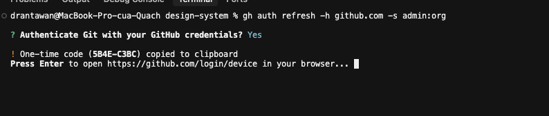
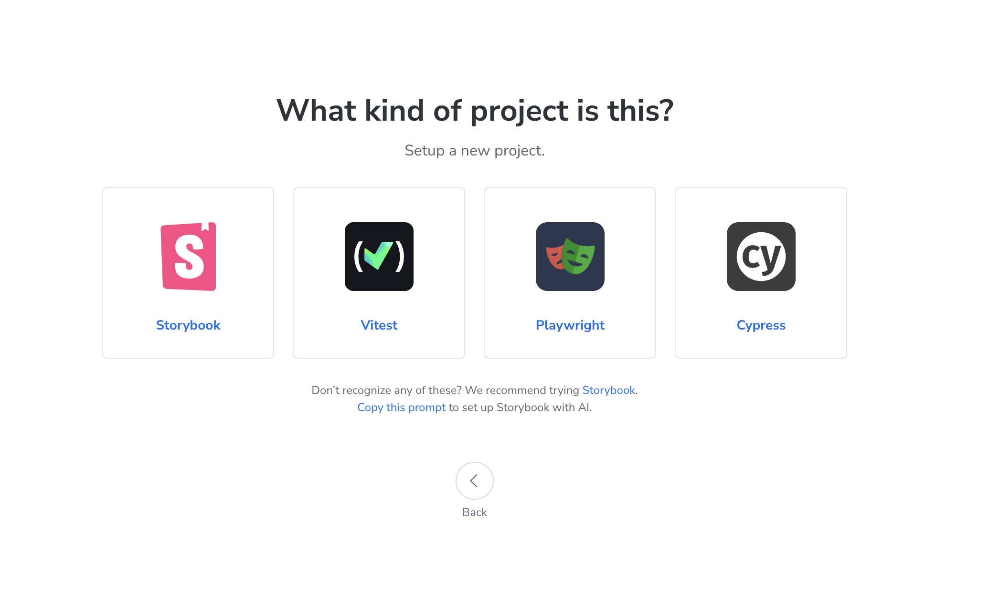
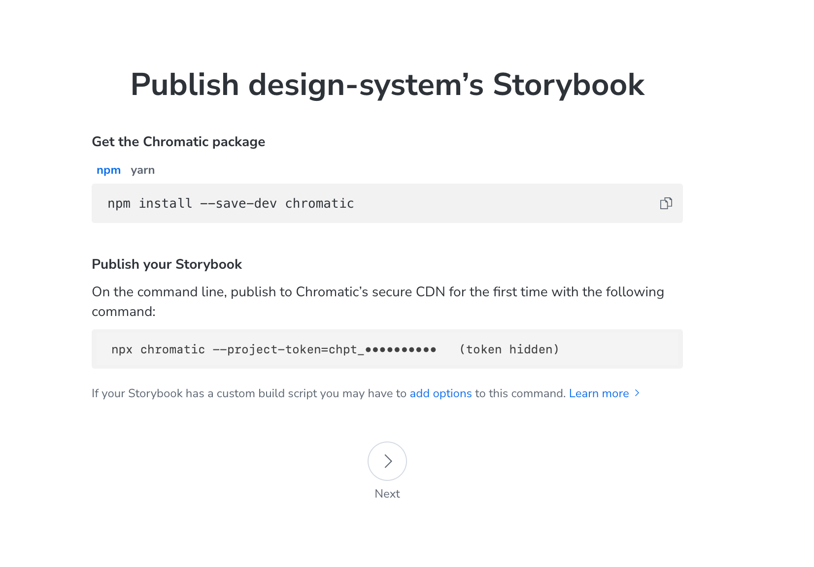
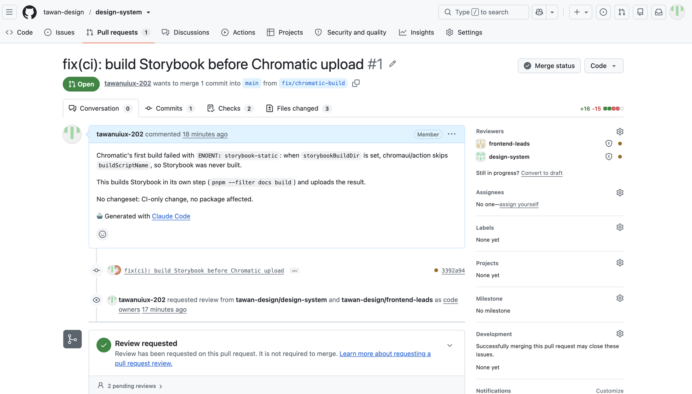
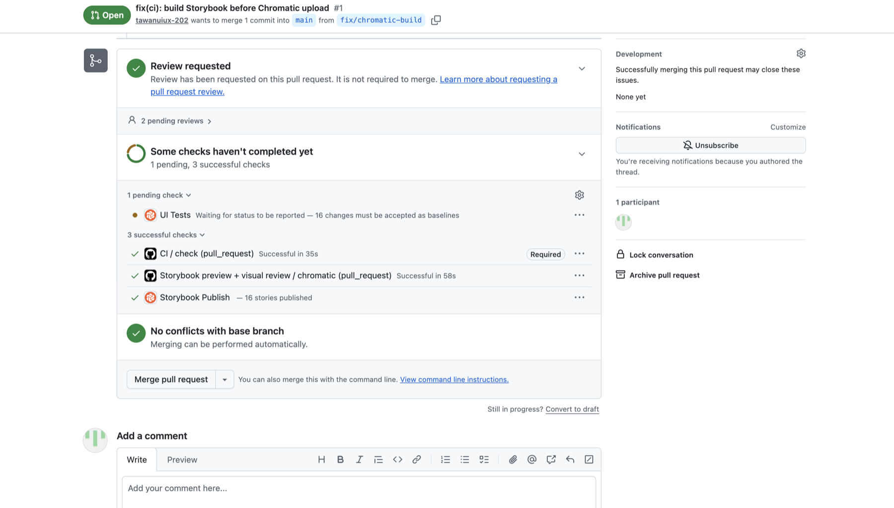
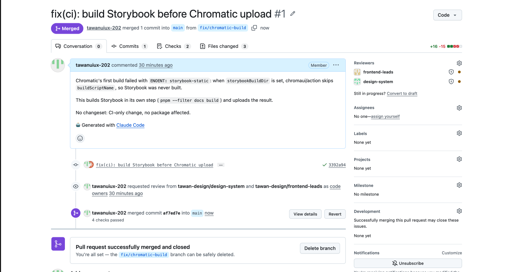

Run the project
Claudepnpm install # first time only
pnpm dev # Storybook → localhost:6006
pnpm playground # Playground → localhost:5173Everything we did in the first setup session, in order. Each step says why we did it, who did it, and what you had to do. Read it once to understand the setup, then use the Playbook recipes for day-to-day work.
What we were building, and who plays which role.
The goal of the session was not to design anything yet. It was to build the pipeline every future design-system change will travel through:
main
By the end, we had sent one real change through that whole pipeline (PR #1), so we know it works.
| Who / what | Role | Where |
|---|---|---|
| You | Design-system owner. You make the decisions, sign in to services, and approve visuals. | Browser, terminal |
| Claude | Does the repo and GitHub work through the terminal: edits files, runs commands, opens PRs. | Claude Code in VS Code |
| GitHub | The shared home for the code. Holds the org, the repo, teams, rules and pull requests. | github.com/tawan-design/design-system |
| GitHub Actions (CI) | A robot that runs checks on every change: typecheck, token audit, build. | "Checks" on each PR |
| Chromatic | Publishes Storybook online and shows visual changes for a designer to accept or deny. | chromatic.com |
| Name | What it is | Used for |
|---|---|---|
tawanuiux-202 | GitHub account | Everything in this project. Owner of the org, signed in to the terminal (gh), author of commits. |
tawan20219 | Another GitHub account | Not used here. It only appears as author of the first 2 commits, before we fixed the identity (step 9). |
tuananhd1910k@gmail.com | An email, not an account | Your global git email. This repo now uses a private GitHub address instead. |
tawan-design | GitHub organization | Owns the repo, the teams and the package name @tawan-design/ui. |
Get the project running and make it yours, before anything goes online.
pnpm install # first time only
pnpm dev # Storybook → localhost:6006
pnpm playground # Playground → localhost:5173Give the project a shared home, with rules about how changes get in.
gh repo create tawan-design/design-system --private --source=. --pushmaingh auth refresh -h github.com -s admin:org
Are you limited to "Maintain" or "Write"? No. As the org owner, you're admin on every repo. Team permissions only matter for people you add later.
Connect Chromatic, then send the first real change through the whole flow.


gh secret set CHROMATIC_PROJECT_TOKEN -R tawan-design/design-system
# paste the chpt_… token when askedTreat the token like a key. Don't paste it in chats, screenshots or files. If it leaks, regenerate it in Chromatic (Manage → Configure) and save it again with the command above.

| Part of the page | What it means |
|---|---|
| Title and #1 | The name of the proposal. It's PR number 1. |
fix/chromatic-build → main | The change was made on a side copy (a branch). Merging copies it into main, the official version. |
| Tabs | Conversation = discussion · Commits = saved steps · Checks = robot tests · Files changed = the actual edits (red = removed, green = added). |
| Description box | The author explains why the change exists. |
| Reviewers 🟠 | GitHub asked your two teams to review, automatically because of CODEOWNERS. The orange dot means "not reviewed yet". It isn't required right now. |

| Line | Meaning |
|---|---|
| ✅ Review requested, not required | Nobody has to approve yet. |
| ✅ CI / check, marked Required | Typecheck, token audit and build passed. This is the only check that blocks merging. |
| ✅ Storybook preview + visual review | The job that builds and uploads Storybook worked. |
| ✅ Storybook Publish, 16 stories | Your Storybook is online in Chromatic. |
| 🟠 UI Tests: 16 changes must be accepted | Waiting for you, the designer. To open it: ••• at the end of the row → View details. |
| ✅ No conflicts with base branch | Nothing clashes with main. |

The flow you rehearsed is the one every future change will follow.
| # | Step | Who | What you see |
|---|---|---|---|
| 1 | Make the change on a branch | Claude or an engineer | Nothing yet |
| 2 | Open a pull request | Claude | A PR link |
| 3 | CI checks the code | Automatic | ✅ or ❌ "check" |
| 4 | Chromatic publishes and compares | Automatic | 🟠 UI Tests if visuals changed |
| 5 | Review visuals: accept or deny | You | Before/after images in Chromatic |
| 6 | Squash and merge | You | Purple "Merged" |
| Word | Plain meaning |
|---|---|
| Repository (repo) | The project folder plus its full history. |
| Commit | One saved step in the history, with a message saying what changed. |
| Branch | A side copy where you make changes without touching the official version. |
main | The official branch. What's in main is the real design system. |
| Pull request (PR) | A proposal to move a branch's changes into main, with review and checks. |
| Merge / Squash | Accept a PR into main. Squash makes it one tidy commit. |
| CI / check | The robot tests that run on every PR. |
| Branch protection | Rules that stop changes reaching main without a PR and passing checks. |
| Organization (org) | A shared GitHub space with members, teams and repos. |
| Team / CODEOWNERS | Groups of people, and the file that says which group reviews which files. |
| Scope | The first part of a package name, like @tawan-design in @tawan-design/ui. |
| Token (access) | A password for a robot. Different from design tokens! |
| Secret | An access token stored encrypted in GitHub, for CI only. |
| Baseline | The approved image of a story that Chromatic compares new versions against. |
| To do | Who | When |
|---|---|---|
| Add an "RFC" category in Discussions (⚙️ → New category) | You | Anytime, 1 minute |
Connect Figma: type /mcp in Claude Code → figma → sign in | You | Before foundations |
| Turn on Code Owners review and 1 required approval | Claude | When a second person joins |
| Next chapter: create the foundations (Recipe A) | You + Claude | Next session |